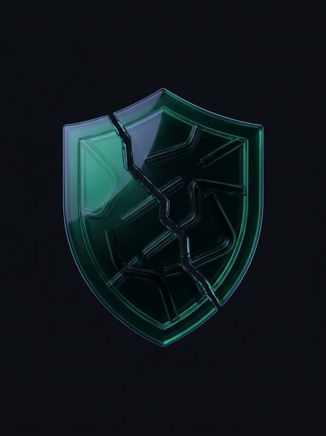

Zero kernel drivers. Zero background daemons. Strict three-valued logic (PASS, FAIL, INCONCLUSIVE) with offline-verifiable DSSE v1 Ed25519 receipts and multi-run drift detection.

Replay real Windows 11 (Tha) non-elevated vs. elevated runs, toggle Customer/MSSP views, and trigger the live Ed25519 Tamper Trap.
ED25519 SIGNEDInspect an authentic signed multi-run delta report with clickable MITRE ATT&CK badges and copyable PowerShell/auditpol remediations.
4:5 PDF READYView or print-to-PDF the 1080×1350 LinkedIn & Instagram deck built strictly from verified 2026 facts and live host data.
OFFLINE VERIFY ZIPDownload the 3-file leave-behind bundle (HTML report, signed JSON receipt, and trusted public key) to test verimetry verify offline.
Play or download the 720×1280 9:16 3D motion-graphics short with synced studio voiceover and auto-ducked soundtrack for Reels, TikTok, Shorts & LinkedIn mobile.
16:9 MP4 · 3m 13s · VOPlay or download the 1280×720 7-chapter narrated walkthrough covering live Windows 11 (Tha) runs, integer basis-point compare metrics, DSSE v1 Tamper Trap & Apache-2.0 taxonomy.